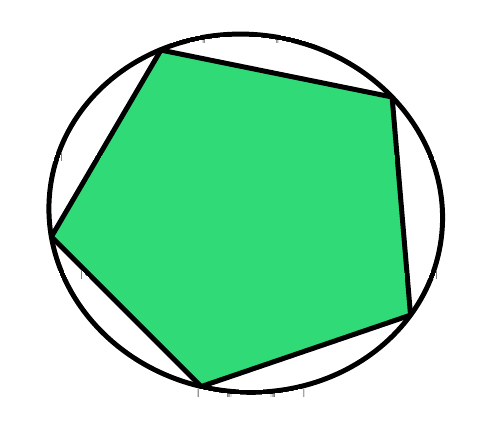
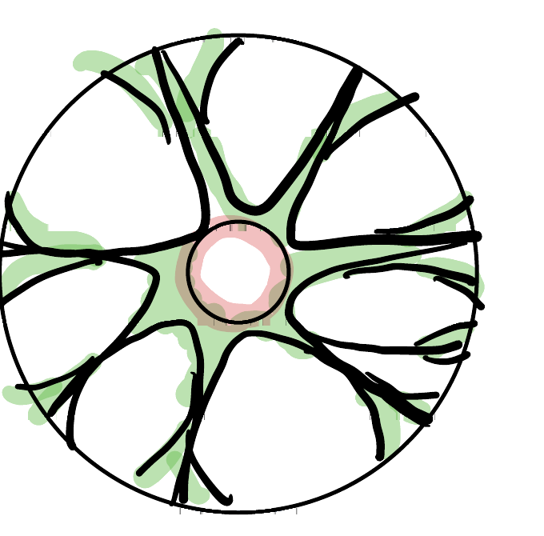

Lecture 2: Convex Hulls and Sparse Approximation
Carathéodory, Maurey, and entropy
A convex hull can contain infinitely many points even when it is generated by a finite set. The central question of this lecture is whether points in that hull admit economical descriptions. Two answers coexist: an exact dimension-dependent description and an approximate dimension-free one.
1 Exact convex representations
Definition 1 (Convex hull) For \(T\subseteq\mathbb R^d\), its convex hull is \[ \operatorname{conv}(T) =\left\{\sum_{i=1}^m\lambda_i t_i: m\geq1,\ t_i\in T,\ \lambda_i\geq0,\ \sum_{i=1}^m\lambda_i=1\right\}. \] It is the smallest convex set containing \(T\).
Theorem 1 (Carathéodory’s theorem) Every point of \(\operatorname{conv}(T)\subseteq\mathbb R^d\) is a convex combination of at most \(d+1\) points of \(T\).
Suppose \(x=\sum_{i=1}^m\lambda_i t_i\) with every \(\lambda_i>0\) and \(m>d+1\). The vectors \((t_i,1)\in\mathbb R^{d+1}\) are linearly dependent, so there are numbers \(a_i\), not all zero, such that \[ \sum_i a_i t_i=0, \qquad \sum_i a_i=0. \] Replace \(\lambda_i\) by \(\lambda_i-sa_i\). These coefficients still represent \(x\) and still sum to one. Choose the sign of \((a_i)\) so that some \(a_i>0\), and increase \(s\) until the first coefficient becomes zero. None becomes negative. We have reduced the number of active points without changing \(x\). Iterating leaves at most \(d+1\) points.
This is exact, but it depends on the ambient dimension. In a million-dimensional space, a representation using a million points may not feel sparse.
Carathéodory’s theorem answers one version of a question about the complexity of \(\operatorname{conv}(T)\): how many points of \(T\) does it take to represent a given \(x\in\operatorname{conv}(T)\) exactly? A more flexible version of the same question asks about approximation instead of exactness: if we allow some error \(\varepsilon\), and let the points repeat, how many are needed? A still more global version asks about the whole hull at once, as a subset of \(\mathbb R^d\) in its own right: what is its covering number \(N(\operatorname{conv}(T),\varepsilon)\)? These are three versions of the same question—how much data does it take to describe \(\operatorname{conv}(T)\)—read at successively coarser resolutions. The rest of this lecture answers the second and third.
2 Approximation by empirical averages
Let \(H\) be a Hilbert space. Suppose \(T\subseteq H\) lies in the ball of radius \(R\).
Theorem 2 (Maurey’s empirical method) For every \(x\in\operatorname{conv}(T)\) and every integer \(m\geq1\), there are \(t_1,\ldots,t_m\in T\), with repetitions allowed, such that \[ \left\|x-\frac1m\sum_{j=1}^m t_j\right\|_H \leq \frac{R}{\sqrt m}. \]
Write \(x=\sum_i p_i u_i\), where \(u_i\in T\) and \((p_i)\) is a probability vector. Let \(Y_1,\ldots,Y_m\) be independent random vectors with \(\mathbb P\{Y_j=u_i\}=p_i\). Then \(\mathbb EY_j=x\). Orthogonality of independent centered summands gives \[ \begin{aligned} \mathbb E\left\|\frac1m\sum_{j=1}^mY_j-x\right\|_H^2 &=\frac1{m^2}\sum_{j=1}^m\mathbb E\|Y_j-x\|_H^2\\ &=\frac1m\big(\mathbb E\|Y_1\|_H^2-\|x\|_H^2\big)\\ &\leq \frac{R^2}{m}. \end{aligned} \] At least one realization is no worse than the expectation, which supplies the desired \(t_1,\ldots,t_m\).
The proof is a small probabilistic method. We define a random candidate, show that its average squared error is small, and conclude that a deterministic candidate must exist.
Corollary 1 (Approximate Carathéodory) Every point of \(\operatorname{conv}(T)\) can be approximated within \(\varepsilon\) by an average of at most \[ m=\left\lceil\frac{R^2}{\varepsilon^2}\right\rceil \] points of \(T\).
Unlike exact Carathéodory, the number of points does not involve \(d\). The price is approximation error.
The proof used the identity \[ \mathbb E\left\|\sum_j Z_j\right\|_H^2 =\sum_j\mathbb E\|Z_j\|_H^2 \] for independent mean-zero random vectors. This is a Pythagorean identity. Analogues in general normed spaces require a substitute for orthogonality and lead to notions such as type and cotype.
3 Covering a finite convex hull
Suppose \(T=\{t_1,\ldots,t_n\}\subseteq RB_2^d\) is finite. Recall from Theorem 2 and Corollary 1 that \(m=\lceil R^2/\varepsilon^2\rceil\) points, drawn with repetition from \(T\) and averaged, suffice to approximate any \(x\in\operatorname{conv}(T)\) within \(\varepsilon\); that is the same \(m\) used below. We bound the covering number of \(\operatorname{conv}(T)\) by counting how many different such averages there are: every empirical average of \(m\) points is determined by a multiset of size \(m\) drawn from the \(n\) available values \(t_1,\ldots,t_n\)—which of the \(n\) points appear, and with what multiplicity. There are \[ \binom{n+m-1}{m} \] such multisets.
Corollary 2 (Entropy of a finite convex hull) If \(m=\lceil R^2/\varepsilon^2\rceil\), then \[ N\big(\operatorname{conv}(T),\varepsilon\big) \leq \binom{n+m-1}{m} \leq \left(\frac{e(n+m-1)}{m}\right)^m. \] Consequently, \[ \log N\big(\operatorname{conv}(T),\varepsilon\big) \lesssim \frac{R^2}{\varepsilon^2} \log\left(2+\frac{n\varepsilon^2}{R^2}\right), \] up to the harmless integer rounding in \(m\).
By Theorem 2, the empirical averages form an \(\varepsilon\)-net. Counting multisets gives the first inequality. The standard estimate \(\binom{N}{m}\leq(eN/m)^m\) gives the second, since \(N=n+m-1\geq m\). For the final display, write \(N/m=(n+m-1)/m\leq 1+n/m\), so \[ \log\binom{n+m-1}{m} \leq m\log\!\left(e+\frac{en}{m}\right) \asymp m\log\!\left(2+\frac nm\right). \] Substituting \(m\asymp R^2/\varepsilon^2\) gives the final display. The extra constant term matters: as \(\varepsilon\to0\) with \(n\) fixed, \(m\to\infty\) and \(n/m\to0\), so \(\log(1+n\varepsilon^2/R^2)\) alone would wrongly suggest the bound vanishes, while the correct bound grows like \(m\asymp\varepsilon^{-2}\), as it must once \(\varepsilon\) is smaller than the spacing between the finitely many points of \(\operatorname{conv}(T)\).
4 The \(\ell^1\) ball
The unit \(\ell^1\) ball has the representation \[ B_1^d=\operatorname{conv}\{\pm e_1,\ldots,\pm e_d\}. \] Its \(2d\) vertices lie on the Euclidean unit sphere. Maurey’s method therefore gives, for \(0<\varepsilon<1\), \[ \log N(B_1^d,\|\cdot\|_2,\varepsilon) \lesssim \varepsilon^{-2}\log(2+d\varepsilon^2). \] The same packing-volume argument used for the Euclidean ball gives another estimate, \[ \log N(B_1^d,\|\cdot\|_2,\varepsilon) \leq d\log(1+2/\varepsilon), \] because an \(\varepsilon\)-packing of \(B_1^d\) produces disjoint \(\varepsilon/2\)-balls inside \((1+\varepsilon/2)B_2^d\). Neither estimate is uniformly better at every scale. This is our first example of two-regime entropy: fine-scale geometry and coarse-scale sparsity can be controlled by different arguments.
Is the Maurey bound ever sharp? At any resolution fine enough to see the dimension at all (\(d\varepsilon^2\gtrsim1\)), yes—up to constants.
Lemma 1 (A packing of sparse subsets) For every \(1\leq s\leq d/2\) there is a family \(X\) of \(s\)-element subsets of \(\{1,\ldots,d\}\) such that \[ |I\triangle J|\geq s/2 \quad\text{for all distinct }I,J\in X, \qquad \log|X|\gtrsim s\log(d/s), \] provided \(d/s\) exceeds an absolute constant.
Build \(X\) greedily: repeatedly choose any remaining \(s\)-subset and discard every \(s\)-subset within symmetric difference \(s/2\) of it, stopping when none remain. If \(|I\triangle J|=2k\), then \(J\) is obtained from \(I\) by swapping out \(k\) of its elements, so \[ \#\{J:|I\triangle J|<s/2\}=\sum_{k<s/4}\binom sk\binom{d-s}k. \] Each term is increasing in \(k\) over this range and satisfies \(\binom sk\binom{d-s}k\leq(e^2sd/k^2)^k\), so the sum is \(\lesssim(d/s)^{s/4}\). Since \(\binom ds\geq(d/s)^s\), the greedy process removes at most \((d/s)^{s/4}\) candidates each time it adds a point, hence produces \[ |X|\gtrsim\frac{(d/s)^s}{(d/s)^{s/4}}=(d/s)^{3s/4}, \] which is \(\gtrsim(d/s)^{s/2}\) once \(d/s\) exceeds an absolute constant.
Proposition 1 (Sharpness for the \(\ell^1\) ball) For \(d^{-1/2}\lesssim\varepsilon\lesssim1\), \[ \log N(B_1^d,\|\cdot\|_2,\varepsilon)\gtrsim\varepsilon^{-2}\log(2+d\varepsilon^2), \] matching the Maurey bound above up to constants.
For \(I\subseteq\{1,\ldots,d\}\) with \(|I|=s\), let \(u_I=\frac1s\sum_{i\in I}e_i\). Since \(u_I\) is an average of \(s\) of the generating vectors, \(u_I\in B_1^d\). For distinct \(I,J\), \[ \|u_I-u_J\|_2=\frac{\sqrt{|I\triangle J|}}{s}. \] Apply Lemma 1 with \(s=\lceil1/(8\varepsilon^2)\rceil\): it gives a family \(X\) with \(\log|X|\gtrsim s\log(d/s)\) and, for distinct \(I,J\in X\), \[ \|u_I-u_J\|_2\geq\frac{\sqrt{s/2}}{s}=\frac1{\sqrt{2s}}\geq2\varepsilon. \] So \(\{u_I:I\in X\}\) is a \(2\varepsilon\)-packing of \(B_1^d\), and the covering–packing comparison from Lecture 1 gives \(N(B_1^d,\varepsilon)\geq M(B_1^d,2\varepsilon)\geq|X|\). Substituting \(s\asymp\varepsilon^{-2}\), \[ \log N(B_1^d,\varepsilon)\gtrsim\varepsilon^{-2}\log(d\varepsilon^2) \asymp\varepsilon^{-2}\log(2+d\varepsilon^2) \] once \(d\varepsilon^2\gtrsim1\), which is exactly the range in which Lemma 1 applies (\(s\lesssim d\)).
Below this range—resolution too coarse to distinguish more than \(O(1)\) coordinates—the sparse-packing argument gives nothing, and it is the dimension-dependent volume bound that takes over instead. Each argument is sharp on its own side of the threshold \(\varepsilon\asymp d^{-1/2}\); neither is sharp on the other.
5 A geometric picture
The two entropy estimates for \(B_1^d\) describe how the \(\ell^1\) ball looks at each resolution. Writing \(N(\varepsilon)=N(B_1^d,\|\cdot\|_2,\varepsilon)\), \[ \log N(\varepsilon)\asymp \begin{cases} \varepsilon^{-2}\log(2+d\varepsilon^2), & d^{-1/2}\lesssim\varepsilon\lesssim1,\\[4pt] d\log(1/\varepsilon), & \varepsilon\lesssim d^{-1/2}. \end{cases} \] Compare the Euclidean ball, for which the volume bound of Lecture 1 is sharp at every scale: \[ \log N(B_2^d,\|\cdot\|_2,\varepsilon)\asymp d\log(1/\varepsilon) \qquad(0<\varepsilon<1). \] At coarse resolution the \(\ell^1\) ball does not know its dimension at all. The Euclidean ball never forgets it. This section builds a concrete picture of that difference.
5.1 A tree that looks like the \(\ell^1\) ball
What kind of metric space has \(\log N(\varepsilon)\asymp\varepsilon^{-2}\), with no dimension in sight? Here is a toy model.
Definition 2 (The \(\ell^1\) tree) Let \(\mathcal T\) be the vertex set of the infinite binary tree, with root at generation \(0\) and \(2^k\) vertices at generation \(k\). Give each edge from generation \(k\) to generation \(k+1\) the length \[ \ell_k=(k+1)^{-3/2}, \] and let the distance between two vertices be the length of the path joining them.
The edge lengths are summable, so the tree is bounded: the distance from the root to any vertex is at most \(\sum_{k\geq1}k^{-3/2}=\zeta(3/2)\), and the diameter is at most \(2\zeta(3/2)\). The lengths shrink slowly, however, and that is what produces the \(\varepsilon^{-2}\).
Proposition 2 (Metric entropy of the \(\ell^1\) tree) For \(0<\varepsilon\leq\frac14\), \[ \log N(\mathcal T,\varepsilon)\asymp\varepsilon^{-2}. \]
Subtrees are small. Let \(v\) be a vertex at generation \(k\geq1\). Every descendant of \(v\) is reached along edges of generations \(k,k+1,\ldots\), so its distance from \(v\) is at most \[ \sum_{j\geq k}(j+1)^{-3/2}\leq\int_k^\infty x^{-3/2}\,dx=\frac2{\sqrt k}. \] So the whole subtree below \(v\) lies in the ball of radius \(2/\sqrt k\) around \(v\).
Upper bound. Fix \(k\) and \(\varepsilon=2/\sqrt k\). The \(2^k\) balls of radius \(\varepsilon\) around the generation-\(k\) vertices cover every vertex of generation at least \(k\), and the fewer than \(2^k\) vertices of smaller generation can each be given their own ball. Hence \(N(\mathcal T,\varepsilon)\leq2^{k+1}\), that is \[ \log N(\mathcal T,\varepsilon)\leq(4\varepsilon^{-2}+1)\log2 . \]
Lower bound. Fix \(j\geq1\) and \(k=4j\). For each of the \(2^j\) vertices of generation \(j\), choose one descendant at generation \(k\). Two of the chosen vertices with different generation-\(j\) ancestors are joined by a path that passes through generations \(j,j+1,\ldots,k\) twice, so their distance is at least \[ 2\sum_{i=j+1}^{k}i^{-3/2} \geq2\int_{j+1}^{k+1}x^{-3/2}\,dx =4\Big(\frac1{\sqrt{j+1}}-\frac1{\sqrt{4j+1}}\Big) \geq\frac1{\sqrt{j+1}} . \] So the chosen vertices form a \((j+1)^{-1/2}\)-separated set of size \(2^j\). By the covering–packing comparison of Lecture 1, with \(2\varepsilon=(j+1)^{-1/2}\), \[ \log N(\mathcal T,\varepsilon)\geq j\log2=\Big(\frac1{4\varepsilon^2}-1\Big)\log2 . \]
The proof shows what the tree is doing. Covering at resolution \(\varepsilon\) means cutting the tree at generation \(k\asymp\varepsilon^{-2}\), and the cost is the number of branches alive at that generation. Nothing in this count is a dimension. The only inputs are the branching, which is constant, and the rate at which the edges shrink, which is polynomial.
The tree reproduces the \(\varepsilon^{-2}\) but not the factor \(\log(2+d\varepsilon^2)\). That factor counts the choice of which \(s\asymp\varepsilon^{-2}\) coordinates a point of \(B_1^d\) is built from. It can be built into the tree by letting each vertex at generation \(k\) have about \(d/k\) children instead of \(2\): then generation \(k\) has about \(d^k/k!\asymp(ed/k)^k\) vertices, and the same argument gives \(\log N(\varepsilon)\asymp\varepsilon^{-2}\log(d\varepsilon^2)\). The tree should also be cut off at generation \(k\asymp d\), where \(\varepsilon\asymp d^{-1/2}\). Below that resolution the volume bound takes over and \(B_1^d\) behaves like a \(d\)-dimensional body.
5.2 The \(\ell^2\) ball as a tree
One can draw a tree for the Euclidean ball too. Take nested nets \(N_0\subseteq N_1\subseteq\cdots\) of \(B_2^d\), with \(N_k\) a \(2^{-k}\)-net, and attach each point of \(N_{k+1}\) to a nearest point of \(N_k\). This is a tree whose vertices at generation \(k\) are the points of \(N_k\) and whose edges from generation \(k\) have length about \(2^{-k}\). By the volume bound, a \(2^{-k}\)-ball contains at most \(5^d\) points of a \(2^{-k-1}\)-net that is also a packing, so every vertex has at most \(C^d\) children, and there are \((1/\varepsilon)^d\) vertices at scale \(\varepsilon\), as there must be. This nested-net tree is worth remembering for its own sake: chaining arguments later in the course walk down exactly this tree.
To compare with Definition 2 it is better to use the same branching. Replace each vertex with \(C^d\) children by a binary tree of depth \(d\log_2C\), and spread the edge length over those generations. The result is a binary tree whose edge lengths still shrink geometrically, but at the rate \(2^{-1/d}\): they are about \(1/d\) for the first \(d\) generations, halve over the next \(d\), and so on. This is not a choice but a consequence of the entropy. Once the branching number is fixed at \(2\), reaching resolution \(\varepsilon\) costs \(\log_2N(\varepsilon)\) generations, so the subtree below generation \(k\) must have diameter about \(\varepsilon\) when \(k\asymp\log_2N(\varepsilon)\). For the two balls this reads \[ \begin{aligned} \ell^2\text{ ball:}&\qquad \ell_k\asymp\frac1d\,2^{-k/d}, &&\text{resolution }\varepsilon\text{ at depth }k\asymp d\log_2(1/\varepsilon),\\[4pt] \ell^1\text{ ball:}&\qquad \ell_k=(k+1)^{-3/2}, &&\text{resolution }\varepsilon\text{ at depth }k\asymp\varepsilon^{-2}. \end{aligned} \] The dimension has to live somewhere. In the nested-net picture it sits in the branching number; in the binary picture it sits in the rate of decay of the edges.
The two pictures in Figure 1 have the same branching and differ only in their edge lengths, and that difference is the two entropy formulas made visible. In the Euclidean tree the dimension sets the decay rate: for fixed \(\varepsilon\) and \(d\to\infty\), the depth needed to reach resolution \(\varepsilon\) grows without bound. In the \(\ell^1\) tree the edge lengths do not involve \(d\) at all, so resolution \(\varepsilon\) is reached at depth \(\varepsilon^{-2}\) in every dimension. That is the dimension-free phenomenon of Maurey’s method in one picture. Metric trees are the basic examples of hyperbolic geometry, and the \(\ell^1\) tree, with its bounded diameter and its branching that costs nothing in dimension, is the sense in which the \(\ell^1\) ball is hyperbolic at coarse scales.
5.3 Milman’s hyperbolic picture
In dimension two we draw a convex body as a polygon inside a circle, as on the left of Figure 2. In high dimension this picture is misleading. The \(\ell^1\) computation shows why: at every resolution coarser than \(d^{-1/2}\), a point of \(B_1^d\) looks like an average of a few extreme points, and the extreme points themselves are far apart from one another. Most of the ball is nowhere near its vertices.


Milman’s heuristic is that a convex body in high dimension should be drawn as a sea urchin, as on the right of Figure 2. There is a solid core, which is a Euclidean ball: most of the volume is there, and we will see later that in a precise sense the body is volumetrically a Euclidean ball. Out of the core grow many thin, tree-like tentacles that reach toward the extreme points. The body is still convex in the ordinary sense, and in hyperbolic geometry a set of this shape is still convex. What the picture records is which geometry is relevant at which scale: Euclidean in the core, where the volume lives, and tree-like among the extreme points, where the metric entropy lives. This is a picture, not a theorem, but it is worth keeping in mind once Gaussian width and chaining appear later in the course.
6 Looking ahead
Covering numbers count how many local approximations a set requires. The next lecture introduces a different summary: expose the set to a random Gaussian linear functional and record the expected maximum. The remarkable fact is that this random quantity both respects convexification and controls metric entropy.